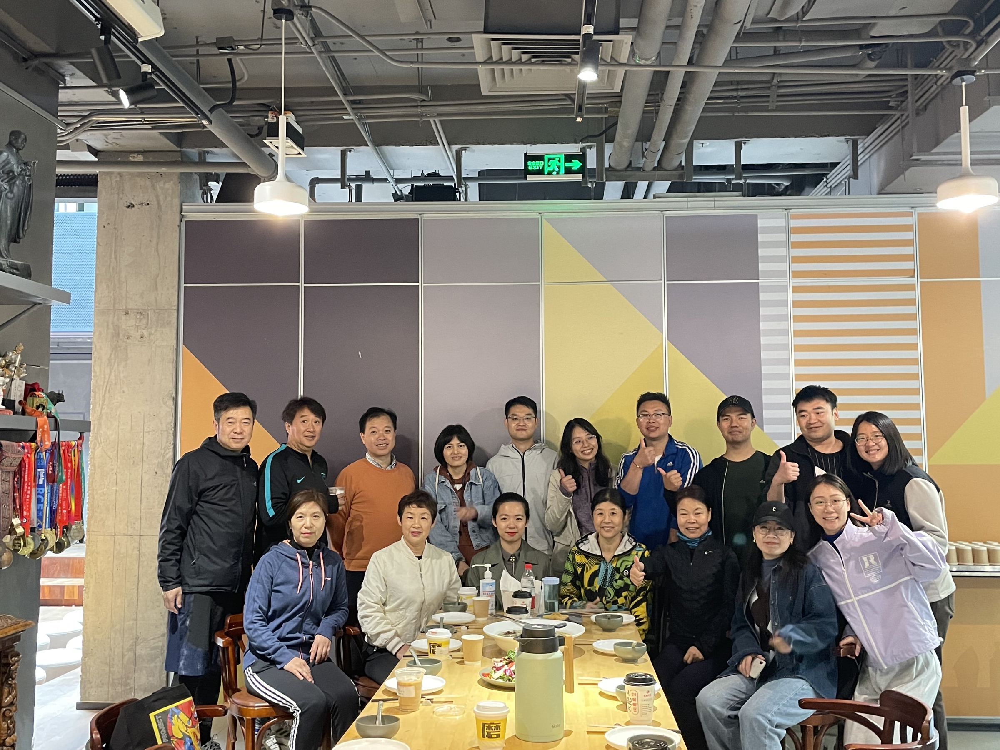
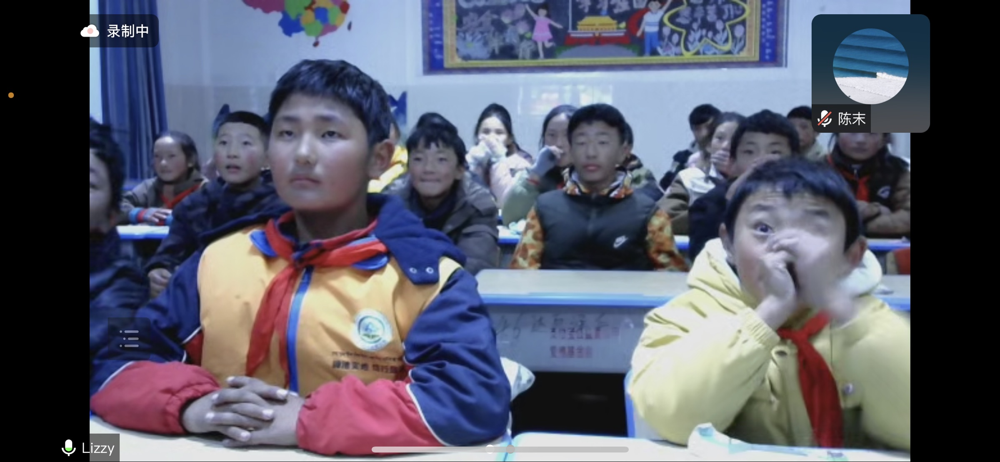
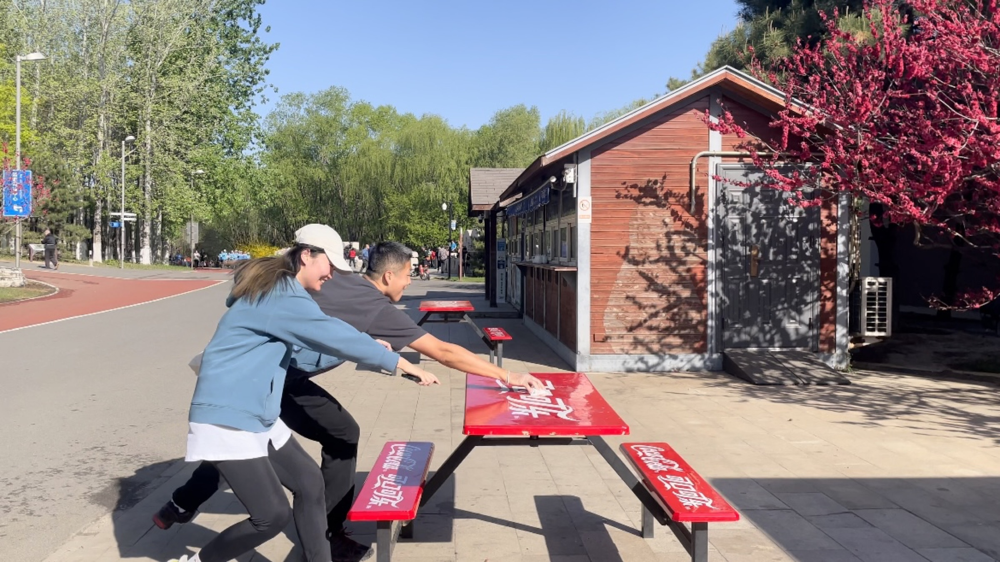
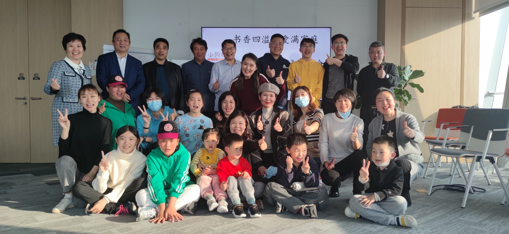
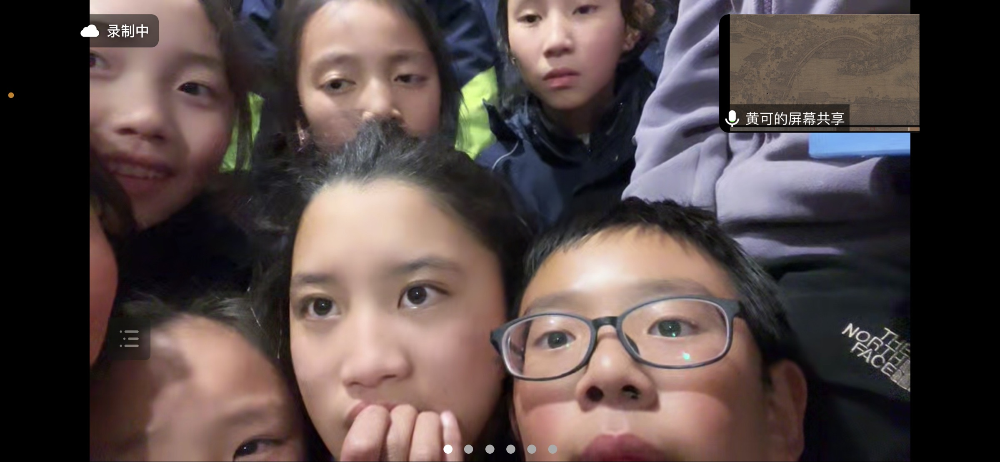
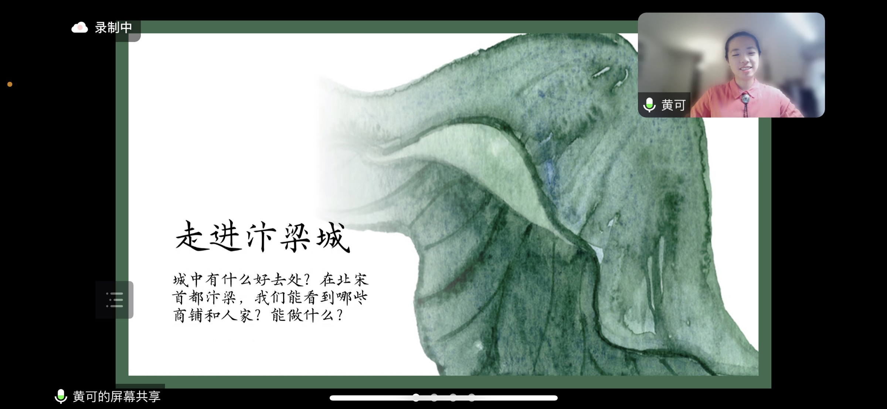
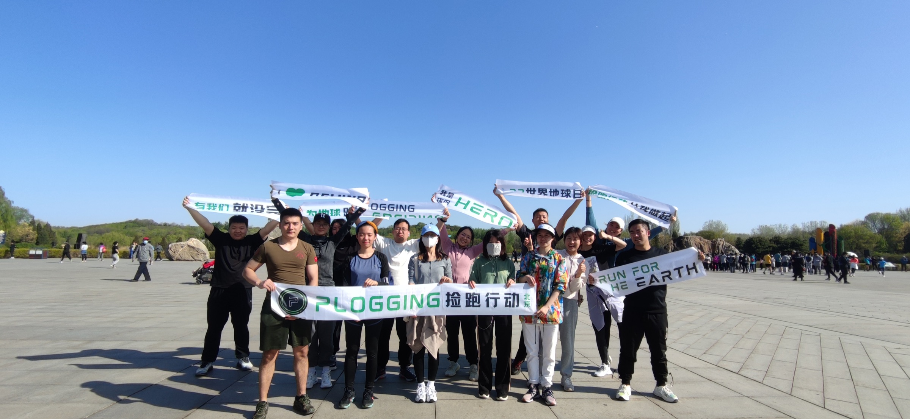

Research and framing
Defined the questions, audience and public value that could give a reading group a durable direction.



With a background in architecture, urban research and experience design, I co-founded New Minds with a small team of young collaborators. We began with a simple question: what could a reading community become if it were designed to last?
Over 1,600+ days, the project developed from a reading group into a human-curated knowledge base: a recurring system of programmes, hosts, discussions, teaching and public action. It is a self-initiated experiment in project management, programme design and collective knowledge-building.
Defined the questions, audience and public value that could give a reading group a durable direction.
Turned an open invitation to read together into repeatable formats, rhythms and participation paths.
Organized themes, hosts, sessions and shared materials as a human-curated archive that can continue to grow.
Coordinated people, partners and delivery so that shared knowledge could reach education, health and public space.
Volunteer coordination
Foundation partnership
Learning and action formats
New Minds began when a small group of young people decided to make time for reading across disciplines. The starting point was not a finished service or an institutional brief, but an attempt to test what a future reading community might look like when its structure is designed from within.
My work moved between framing the problem, shaping the programme and keeping the project moving. Architecture and urban research taught me to read systems; experience design taught me to make those systems usable; New Minds became a place to test both in a living social setting.

The project gradually developed a lightweight operating system: recurring reading, hosted conversations, shared responsibilities and a rhythm that made it possible for people to return through changing periods of life.
This is where project management became part of the design work. The task was to hold direction without over-controlling participation, and to make a distributed group legible enough for people to contribute.
Build a repeatable rhythm so participation can continue beyond a single event.
Distribute hosting, coordination and care instead of placing the whole project on one person.
Move between reading, teaching, workshops and public action without losing the shared core.


New Minds treats reading not only as an event, but as a way to collect and connect knowledge. Themes, books, hosts, conversations and teaching records create a growing human-curated layer that gives information context and makes it reusable.
The relationship to technology is intentionally modest and future-facing. The project does not claim to be an AI product; it explores the human work that any useful digital or AI-assisted knowledge system depends on: choosing what matters, organizing it clearly and keeping it connected to lived experience.
Select questions, books and perspectives that are worth carrying forward.
Connect knowledge to people, places, everyday decisions and public concerns.
Turn shared learning into classes, workshops, conversations and action.

The value of the project is not contained in the reading room. Through a partnership with Beijing Dexing Tianxia Foundation, members teach children online; other formats connect reading to financial literacy, health and environmental care.
These programmes test whether a knowledge community can move between reflection and action without losing its openness. Public benefit is not an extra layer added after the project; it is one of the ways the knowledge base stays alive.
More than 150 member-led video lessons extend the archive into children’s learning.
Reading themes become workshops that connect ideas with personal decisions and family life.
Plogging turns shared values into a visible act of environmental care.

After more than four years, the most important result is continuity: a group of people, formats and records that can keep generating new learning. The project remains collective, but its operating logic is now visible enough to be studied, adapted and extended.
The numbers describe a shared record rather than an individual achievement. My contribution was to help design the conditions that let the record accumulate: a clear direction, workable formats, distributed responsibility and enough documentation for knowledge to remain available.
People choose the questions, connect the references and decide what should be carried forward.
Knowledge architecture / editorial careA structured, living archive could later support digital retrieval or AI-assisted learning without replacing the human work that gives knowledge meaning.
Future-facing direction, not a current product claimGatherings, photographs and recurring rituals give the project a memory that is social as much as archival. They make a long-term knowledge practice feel inhabited rather than abstract.
New Minds is a collective project. My contribution moved across research framing, project management, programme and experience design, knowledge organization, community operations and public-interest delivery. The long-term record belongs to the whole community; this case study makes my working scope visible.
Back to top